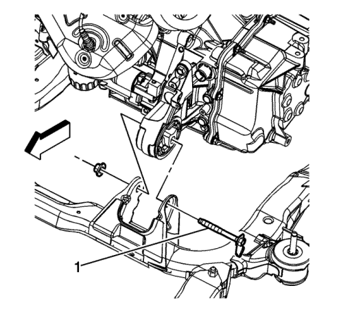
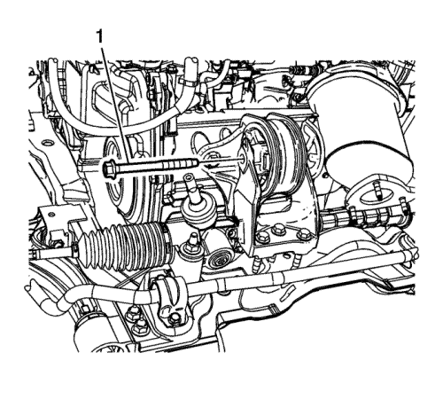
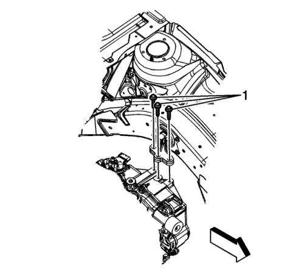

Equilibrado del alojamiento del tren motriz
Importante: Siga los pasos del proceso de equilibrado que se relacionan a continuación. Los alojamientos del tren motriz se deben ajustar por orden.

- Extraiga el conjunto del filtro de aire. Consultar Sustitución del conjunto del filtro de aire : LE5 o LE9 → LD9 .
- Desmonte la bandeja de la batería. Consultar Sustitución de la bandeja de la batería .
- Elevar el vehículo y soportarlo de manera segura. Consultar Elevación del vehículo con un gato .
- Afloje el tornillo pasante del soporte del transeje delantero (1).

- Afloje el tornillo pasante del soporte del transeje trasero (1).
- Bajar el vehículo.
- Coloque dos gatos de suelo con bloques de madera bajo el motor y el transeje, para sujetar el conjunto del tren motriz.

- Afloje los tornillos del alojamiento del transeje (1).

- Afloje los tornillos (1) del apoyo del soporte del motor.
- Recoloque los dos gatos de manera que quede un hueco de 1/8 de pulgada entre el alojamiento y el soporte.
Precaución: Consulte Precaución con las fijaciones en la sección Prólogo
- Apriete los tornillos del alojamiento del transeje (1) con la secuencia siguiente.
Apretar
Apriete los tornillos a 45 N·m (33 lib. pie).
- Apriete los tornillos del soporte del alojamiento del motor (1), con la secuencia siguiente.
Apretar
Apriete los tornillos a 50 N·m (37 lib. pie).
- Retire los gatos de suelo de debajo del cárter de aceite.
- Agite fuertemente el tren motriz desde la parte delantera a la trasera y deje que se pare.
- Elevar el vehículo
- Apriete el tornillo pasante del soporte del transeje trasero (1).
Apretar
Apriete el tornillo a 100 N·m (74 lib pie).
- Afloje el tornillo pasante del soporte del transeje delantero (1).
Apretar
Apriete el tornillo a 100 N·m (74 lib pie).
- Bajar el vehículo.
- Monte la bandeja de la batería. Consultar Sustitución de la bandeja de la batería .
- Monte el conjunto del filtro de aire. Consultar Sustitución del conjunto del filtro de aire : LE5 o LE9 → LD9 .
| © Copyright Chevrolet Europe. All rights reserved |